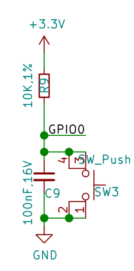

基础用例
点亮板载LED灯珠
在完成MicroPython 运行环境设置后，可以立即尝试编程。
新建一个 main.py 脚本文件，在其中输入以下代码：
from machine import Pin
from neopixel import NeoPixel
import time
pin_48 = Pin(48)
np = NeoPixel(pin_48, 1,bpp=3, timing=1)
while True:
np[0] = (25,25,25)
np.write()
time.sleep_ms(250)
np[0] = (0,0,0)
np.write()
time.sleep_ms(250)
保存文件到MicroPython设备中，点击“Run”运行按钮，即可让板载彩色LED灯珠闪烁。
修改 np[0] = (25,25,25)等号右侧元组内的数据，可以改变颜色，分别对应R，G，B三色亮度等级，设定范围是0-255，建议使用范围0-25，亮度过高时请勿长时间直视！
neopixel — control of WS2812 / NeoPixel LEDs — MicroPython 文档
使彩灯循环显示九种颜色
from machine import Pin
from neopixel import NeoPixel
import time
pin_48 = Pin(48, Pin.OUT)
np = NeoPixel(pin_48, 1,bpp=3, timing=1)
RED = (255, 0, 0)
ORANGE = (255, 100, 0)
YELLOW = (255, 255, 0)
GREEN = (0, 255, 0)
CYAN = (0, 255, 255)
BLUE = (0, 0, 255)
PURPLE = (180, 0, 255)
WHITE = (255, 255, 255)
OFF = (0, 0, 0)
color_list = [RED,ORANGE,YELLOW,GREEN,CYAN,BLUE,PURPLE,WHITE,OFF]
brightness = 0.1
while True:
for i in color_list:
color = (round(i[0]*brightness),round(i[1]*brightness),round(i[2]*brightness))
np[0] = color
np.write()
time.sleep(1)
全彩LED灯珠循环显示彩虹色
基于上一节，我们可以更进一步，编写循环自动改变灯珠颜色。
from machine import Pin
from neopixel import NeoPixel
import time
def rainbow(num=1,level=25,delay=100):
def write_all(num,delay,red,green,blue):
for j in range (num):
np[j] = (red,green,blue)
np.write()
time.sleep_ms(delay)
red,green,blue = level,0,0
rainbow_step_list2 = [(0,1,0),(-1,0,0),(0,0,1),(0,-1,0),(1,0,0),(0,0,-1)]
for step in rainbow_step_list2:
for i in range (level):
red+=step[0]
green+=step[1]
blue+=step[2]
write_all(num,delay,red,green,blue)
np = NeoPixel(Pin(48, Pin.OUT), 1,bpp=3, timing=1)
while True:
rainbow(num=1,level=25,delay=10)
此例程可适用于任意长度的ws2812灯带。
修改 NeoPixel(Pin(48, Pin.OUT), 1,bpp=3, timing=1) 中第一个参数至任意想要串接灯带的GPIO管脚。
修改 rainbow(num=1,level=25,delay=100) 中的num参数为灯带上对应灯珠的数量。
当然我们也可以根据自己的想法使用for循环或while循环制作自己想要的颜色变化规律。
设计按键中断程序,控制彩灯
BPI-Leaf-S3 有两颗按键，BOOT 与 RST，RST控制芯片硬件复位，而BOOT则与GPIO0相连，其电路如下图所示。

可见当开发板正常通电工作时，GPIO0在BOOT按键未按下时，串联一颗电阻接到3.3v，此时为高电位；当BOOT按键按下时，GPIO0将直接接地，此时则为低电位。ESP32-S3芯片通过检测此GPIO管脚的电位即可判断按钮是否被按下。
MicroPython GPIO中断程序 machine.Pin.irq 文档
在程序中，通过检测 GPIO中断的触发方式，即可设计一套记录按键被按压的次数的中断程序，用判断当前已经按压的次数来控制彩灯的颜色。
from machine import Pin
from neopixel import NeoPixel
from array import array
import time
import micropython
micropython.alloc_emergency_exception_buf(100)
p_48 = Pin(48, Pin.OUT)
np = NeoPixel(p_48, 1,bpp=3, timing=1)
p0 = Pin(0,Pin.IN,Pin.PULL_UP)
trig_locks = array('B',[0])
trig_timeticks_list = array('L',[0,0])
count = array('L',[0])
def p0_irq(pin):
if pin.value()==0 and trig_locks[0]==0:
trig_timeticks_list[0]=time.ticks_ms()
trig_locks[0]=1
elif pin.value()==1 and trig_locks[0]==1:
trig_timeticks_list[1]=time.ticks_diff(time.ticks_ms(),trig_timeticks_list[0])
trig_locks[0]=0
if trig_timeticks_list[1] >= 20:
count[0] = count[0] + 1
if count[0] > 8:
count[0] = 0
p0.irq(handler=p0_irq,trigger= Pin.IRQ_FALLING | Pin.IRQ_RISING )
RED = (255, 0, 0)
ORANGE = (255, 100, 0)
YELLOW = (255, 255, 0)
GREEN = (0, 255, 0)
CYAN = (0, 255, 255)
BLUE = (0, 0, 255)
PURPLE = (180, 0, 255)
WHITE = (255, 255, 255)
OFF = (0, 0, 0)
color_list = [RED,ORANGE,YELLOW,GREEN,CYAN,BLUE,PURPLE,WHITE,OFF]
brightness = 0.1
while True:
print (count)
i = color_list[count[0]]
color = (round(i[0]*brightness),round(i[1]*brightness),round(i[2]*brightness))
np[0] = color
np.write()
time.sleep(0.1)
PWM 单色LED呼吸灯
外部硬件需求
一个可以在3.3v电压下工作的LED灯。
接线参考
例程中使用的是GPIO13管脚，将LED灯正极与GPIO13管脚连接，负极与GND连接。
Code
from machine import Pin, PWM
import time
PWM_LED = PWM(Pin(13))
PWM_LED.freq(1000)
PWM_LED.duty(0)
while True:
for i in range(0,1024,1):
PWM_LED.duty(i)
time.sleep_ms(2)
for i in range(1022,0,-1):
PWM_LED.duty(i)
time.sleep_ms(1)
TB6612FNG模块 PWM驱动电机
外部硬件需求
一个TB6612FNG模块，一个3.3~5V直流电机。
接线参考
| TB6612FNG | BPI-Leaf-S3 |
|---|---|
| PWMA | 11 |
| AIN2 | 13 |
| AIN1 | 12 |
| STBY | 10 |
| VM | 5V |
| VCC | 3.3V |
| GND | GND |
| AO1 | 电机N极 |
| AO2 | 电机S极 |
AO1/AO2 与电机的连接可任意调换接线顺序，以此改变旋转方向。
运行效果
电机将启动朝一个方向旋转并在7秒逐渐加速到当前电流可达到的最大转速，然后在5秒内逐渐减速至停转，随后反向旋转并重复这个过程。
Code
from machine import Pin,PWM
import time
PWM_A = PWM(Pin(11)) #Set PWM output pin
PWM_A.freq(20000) #Set PWM frequency
PWM_A.duty(0) #Set PWM duty cycle
AIN1 = Pin(12,Pin.OUT)
AIN2 = Pin(13,Pin.OUT)
STBY = Pin(10,Pin.OUT)
STBY.on() #When STBY pin is at high level, TB6612FNG starts.
def MOTOR_Forward():
AIN1.on()
AIN2.off()
def MOTOR_Reverse():
AIN1.off()
AIN2.on()
while True:
MOTOR_Forward()
#for cycle is used to control the PWM duty cycle change.
#The PWM duty cycle control precision is 10bit, ie 0~1023.
#Some motors require a certain PWM duty cycle to start.
for i in range(350,1024,1):
PWM_A.duty(i)
time.sleep_ms(10)
for i in range(1022,0,-1):
PWM_A.duty(i)
time.sleep_ms(5)
MOTOR_Reverse()
for i in range(350,1024,1):
PWM_A.duty(i)
time.sleep_ms(10)
for i in range(1022,0,-1):
PWM_A.duty(i)
time.sleep_ms(5)
使用ADC检测电位器电压
外部硬件需求
一个电位器。

ESP32-S3的ADC
ESP32-S3芯片内部集成了两个ADC模数转换器 ，测量范围 0mV-3100mV，分辨率为12bit，即将0mV-3100mV分为2^12=4096级，每一级为一个数字量。
两个ADC模数转换器各有10个测量通道，ADC1为GPIO1 ~ 10,ADC2为GPIO11 ~ 20 。
接线参考
GND接GND，VCC接3V3，S输出端接GPIO11管脚，使用的是ADC2的通道1进行测量。
GPIO1~20管脚都可做ADC输入管脚。
Code
from machine import Pin,ADC
import time
adc11 = ADC(Pin(11),atten=ADC.ATTN_11DB)
#adc11 = ADC(Pin(11)）
#adc11.atten(ADC.ATTN_11DB)
while True:
read=adc11.read()
read_u16=adc11.read_u16()
read_uv=adc11.read_uv()
print("read={0},read_u16={1},read_uv={2}".format(read,read_u16,read_uv))
time.sleep_ms(100)
| 衰减值 | 可测量的输入电压范围 |
|---|---|
| ADC.ATTN_0DB | 0 mV ~ 950 mV |
| ADC.ATTN_2_5DB | 0 mV ~ 1250 mV |
| ADC.ATTN_6DB | 0 mV ~ 1750 mV |
| ADC.ATTN_11DB | 0 mV ~ 3100 mV |
ADC(*，atten)初始化一个GPIO管脚的ADC通道，可以选择使用atten设定衰减值，它控制芯片可测量的输入电压范围，如果不设置，将为默认值atten=ADC.ATTN_0DB或上一次所设定的值。- 可以在初始化一个ADC通道后通过
ADC.atten()修改衰减值。 ADC.read()读取ADC并返回读取结果，ESP32-S3芯片的ADC所返回的是12位精度的数据。ADC.read_u16()读取ADC并将返回16位的数据。ADC.read_uv()根据ADC的特性以uV微伏为单位返回校准的输入电压。返回值只有mV毫伏分辨率（即，将始终是1000微伏的倍数）。
WiFi功能也使用了ADC2，因此在WiFi处于活动状态时尝试从ADC2的测量通道GPIO11 ~ 20读取模拟值将引发异常。
建议使用ADC.read_uv()来读取电压值，它是根据ADC模数转换器的特性经过校准后返回的十进制常数，较比另外两个读取方法更加准确，同时也建议使用时直接经过整除运算：ADC.read_uv()//1000 获取mV毫伏分辨率的数据。
直接打印输出ADC.read()或ADC.read_u16()得到的是十进制数值，可用hex()函数将数据类型转化为十六进制，例如hex(ADC.read())，或用bin()函数将数据类型转化为二进制。
用电位器无极调控彩灯亮度
在 使彩灯循环显示九种颜色 小节的基础上，可使用电位器来控制彩灯的亮度。
Code
from machine import Pin,ADC
from neopixel import NeoPixel
from array import array
import time
import micropython
adc1 = ADC(Pin(1),atten=ADC.ATTN_11DB)
micropython.alloc_emergency_exception_buf(100)
p_48 = Pin(48, Pin.OUT)
np = NeoPixel(p_48, 1,bpp=3, timing=1)
p0 = Pin(0,Pin.IN,Pin.PULL_UP)
trig_locks = array('B',[0])
trig_timeticks_list = array('L',[0,0])
count = array('L',[0])
def p0_irq(pin):
if pin.value()==0 and trig_locks[0]==0:
trig_timeticks_list[0]=time.ticks_ms()
trig_locks[0]=1
elif pin.value()==1 and trig_locks[0]==1:
trig_timeticks_list[1]=time.ticks_diff(time.ticks_ms(),trig_timeticks_list[0])
trig_locks[0]=0
if trig_timeticks_list[1] >= 20:
count[0] = count[0] + 1
if count[0] > 8:
count[0] = 0
p0.irq(handler=p0_irq,trigger= Pin.IRQ_FALLING | Pin.IRQ_RISING )
RED = (255, 0, 0)
ORANGE = (255, 100, 0)
YELLOW = (255, 255, 0)
GREEN = (0, 255, 0)
CYAN = (0, 255, 255)
BLUE = (0, 0, 255)
PURPLE = (180, 0, 255)
WHITE = (255, 255, 255)
OFF = (0, 0, 0)
color_list = [RED,ORANGE,YELLOW,GREEN,CYAN,BLUE,PURPLE,WHITE,OFF]
while True:
adc1_read = adc1.read() # 12bit
adc1_read_mv = adc1.read_uv()/1000
adc1_read_u16 = adc1.read_u16() # 16bit
brightness = adc1_read/4095
i = color_list[count[0]]
color = (round(i[0]*brightness),round(i[1]*brightness),round(i[2]*brightness))
np[0] = color
np.write()
print(adc1_read,adc1_read_u16,adc1_read_mv,"mv",count[0],color)
time.sleep(0.1)
使用ADC测量电位器，用以调整电机转速
外部硬件需求
- 电位器 x 1
- TB6612FNG电机驱动模块 x 1
- 5v直流电机 x 1
- 一些连接线材
接线参考
| Potentiometer | BPI-Leaf-S3 |
|---|---|
| GND | GND |
| VCC | 3V3 |
| S | 14 |
| TB6612FNG | BPI-Leaf-S3 |
|---|---|
| PWMA | 11 |
| AIN2 | 13 |
| AIN1 | 12 |
| STBY | 10 |
| VM | 5V |
| VCC | 3.3V |
| GND | GND |
| TB6612FNG | Motor |
|---|---|
| AO1 | Motor N pole |
| AO2 | Motor S pole |
运行效果
开发板将间隔100ms在REPL输出ADC读取到的电压值，单位为mv，以及对应控制的PWM占空比。
用手调整电位器，改变其输出电压，电压越大，开发板输出的PWM占空比越高，电机转速越快。
Code
from machine import Pin,ADC,PWM
import time
adc14 = ADC(Pin(14),atten=ADC.ATTN_11DB)
PWM_A = PWM(Pin(11)) #Set PWM output pin
PWM_A.freq(20000) #Set PWM frequency
PWM_A.duty(0) #Set PWM duty cycle
AIN1 = Pin(12,Pin.OUT)
AIN2 = Pin(13,Pin.OUT)
STBY = Pin(10,Pin.OUT)
AIN1.on() #MOTOR forward
AIN2.off()
STBY.on() #When STBY pin is at high level, TB6612FNG starts.
while True:
read_mv=adc14.read_uv()//1000
if read_mv <= 3000:
duty_set = int(1023/3000 * read_mv)
else:
duty_set = 1023
PWM_A.duty(duty_set)
Duty_cycle = int(duty_set/1023*100)
print("ADC_read={0}mv,Duty_cycle={1}%".format(read_mv,Duty_cycle))
time.sleep_ms(100)
UART 串口数据读写
外部硬件需求
USB转UART模块（CH340，CP2102等）。
软件需求
一个串口调试软件例如PuTTY，以及USB转UART模块所需驱动。
接线参考
将BPI-Leaf-S3开发板通过USB连接电脑，USB转UART模块的RX接GPIO17（BPI-Leaf-S3的TX），TX接GPIO18（BPI-Leaf-S3的RX），GND接GND（共地），USB转UART模块的USB接口连接电脑，可以是连接BPI-Leaf-S3的同一台电脑，也可以是不同的两台电脑。
运行效果
在BPI-Leaf-S3所在电脑的MicroPython REPL中将间隔一秒输出一次从USB转UART模块中接收到的数据。
而在USB转UART模块所在的电脑的串口调试软件窗口中则可以看到，每间隔一秒输出一行由BPI-Leaf-S3发送的字符 Hello World! 。
Code
from machine import UART
import time
uart1 = UART(1, tx=17, rx=18)
# Select the UART interface and specify the pins used by TX and RX
uart1.init(115200, bits=8, parity=None, stop=1)
# Initialization, set the baud rate, set the number of characters, set the parity, set the stop bit
def test():
for i in range(50):
uart1.write('Hello World!') # write data
time.sleep(0.5)
print(uart1.read()) # read data
time.sleep(0.5)
test()
I²C，SSD1306 OLED 显示
SSD1306 OLED屏幕模块是一个很常见的可以使用I2C通信协议的屏幕模块，最大输出128*64 bit的图像，无灰阶，单颗像素仅有亮灭两个状态，控制逻辑相对简单，很适合入门学习单片机驱动屏幕显示的项目。
外部硬件需求
一块具备I²C接口的SSD1306 OLED屏幕模块，最好为128*64像素的。
驱动库下载
将 ssd1306.py 下载到本地后，再上传到MicroPython设备中。
接线参考
| SSD1306 OLED | Board |
|---|---|
| GND | GND |
| VCC | 3V3 |
| SCL | 16 |
| SDA | 15 |
扫描I²C地址
from machine import I2C,Pin
sda_pin=Pin(15,Pin.PULL_UP)
scl_pin=Pin(16,Pin.PULL_UP)
i2c = I2C(1,sda=sda_pin, scl=scl_pin, freq=400_000)
i2c_list=i2c.scan()
i2c_total=len(i2c_list)
print("Total num:",i2c_total)
j=0
for i in i2c_list:
j=j+1
print("NO.{0},address:{1}".format(j,hex(i)))
通常SSD1306的地址为0x3c。
显示字符
from machine import I2C, Pin
from ssd1306 import SSD1306_I2C
sda_pin = Pin(15, Pin.PULL_UP)
scl_pin = Pin(16, Pin.PULL_UP)
i2c = I2C(1, sda=sda_pin, scl=scl_pin, freq=800_000)
print(i2c.scan())
oled = SSD1306_I2C(128, 64, i2c, addr=0x3c)
def display():
# The framebuf library only supports ASCII printing characters encoded as 32~126
oled.text(" !\"#$%&'()*+,-./", 0, 0)
oled.text("0123456789:;<=>?", 0, 8)
oled.text("@ABCDEFGHIJKLMNO", 0, 16)
oled.text("PQRSTUVWXYZ[\]^_", 0, 24)
oled.text("`abcdefghijklmno", 0, 32)
oled.text("pqrstuvwxyz{|}~", 0, 40)
oled.show()
def testAscii():
# The return value of chr() is the ASCII character corresponding to the current integer
Ascii = ''
for i in range(32, 127):
Ascii = Ascii + chr(i)
for i in range(128, 256):
Ascii = Ascii + chr(i)
return Ascii
def display_Ascii():
# The framebuf library only supports ASCII printing characters encoded as 32~126
oled.text(testAscii()[0:16], 0, 0)
oled.text(testAscii()[16:32], 0, 8)
oled.text(testAscii()[32:48], 0, 16)
oled.text(testAscii()[48:64], 0, 24)
oled.text(testAscii()[64:80], 0, 32)
oled.text(testAscii()[80:95], 0, 40)
oled.show()
if __name__ == "__main__":
display()
# print(testAscii())
# display_Ascii()
# ASCII printing characters (character encoding: 32-127)
# 32~126 (95 in total) are characters: 32 is a space, among which 48~57 are ten Arabic numerals from 0 to 9,
# 65～90 are 26 uppercase English letters,
# 97~122 are 26 lowercase English letters,
# The rest are some punctuation marks, operation symbols, etc.
# The 127th character represents the delete command on the keyboard.
# ASCII extension code (character encoding: 128-255)
# The last 128 are called extended ASCII codes.
# Many x86-based systems support the use of extended (or "high") ASCII.
# The extended ASCII code allows the 8th bit of each character
# to be used to determine additional 128 special symbol characters, foreign language letters and graphic symbols.
OLED显示电位器电压与实时进度条
继续使用用电位器无极调控彩灯亮度 章节中中用ADC检测电位器电压的方法，可以设计一个让OLED屏幕显示电位器电压与实时进度条的程序。
接线参考
| Potentiometer | Board |
|---|---|
| GND | GND |
| VCC | 3V3 |
| S | GPIO1 |
| SSD1306 OLED | Board |
|---|---|
| GND | GND |
| VCC | 3V3 |
| SCL | 16 |
| SDA | 15 |
Code
from machine import Pin,ADC,I2C
from ssd1306 import SSD1306_I2C
import time
adc1 = ADC(Pin(1),atten=ADC.ATTN_11DB)
sda_pin=Pin(15,Pin.PULL_UP)
scl_pin=Pin(16,Pin.PULL_UP)
i2c = I2C(1,sda=sda_pin, scl=scl_pin, freq=800_000)
print(i2c.scan())
oled = SSD1306_I2C(128, 64, i2c, addr=0x3c)
#Init, white background
oled.fill(1)
oled.rect(0,32,128,10,0)
while True:
#Read ADC
adc1_read = adc1.read() # 12bit
adc1_read_mv = adc1.read_uv()//1000
adc1_read_u16 = adc1.read_u16() # 16bit
#Set progress bar
bar_width = round (adc1_read / 4095 * 128)
oled.fill_rect(bar_width,33,128-bar_width,8,0)
oled.fill_rect(0,33,bar_width,8,1)
#Set ADC text, centered
text_adc1 = str(adc1_read_mv) + " mV"
start_x_text_adc1 = 64 - len(text_adc1)*4
oled.fill_rect(36,24,56,8,1)
oled.text(text_adc1,start_x_text_adc1,24,0)
#Show
oled.show()
print(adc1_read,adc1_read_u16,adc1_read_mv,"mv",bar_width,"width")
time.sleep(0.05)